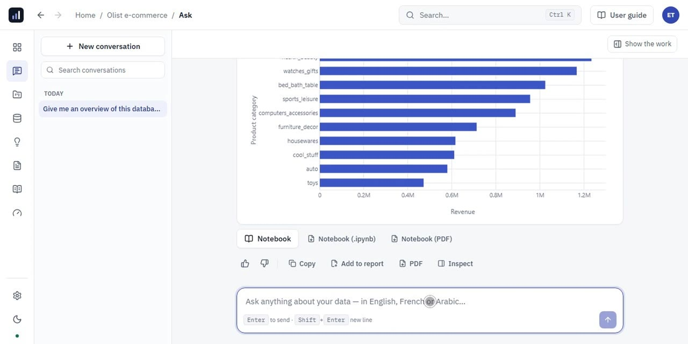

2 video demosDataBot: your AI-powered data science assistant
An AI assistant that connects to databases and files, writes and runs the code, builds and evaluates models. It follows CRISP-DM and only moves to the next phase once the user approves.
- Subscriptions for the same calls
- +40%
- AUC on future campaigns
- 0.65
- Automated tests
- ≈ 290
- GPT-5.1
- GPT-5.4
- LangChain
- LangGraph
- FastAPI
- React
- DuckDB
- Docker